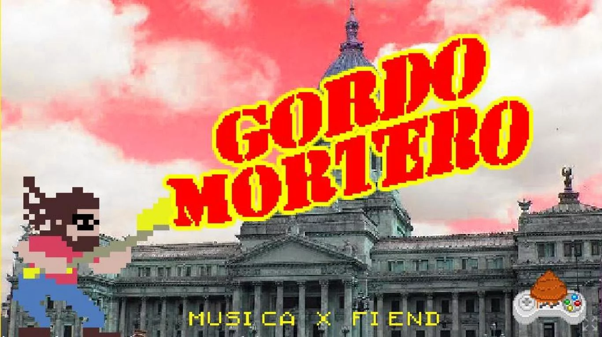
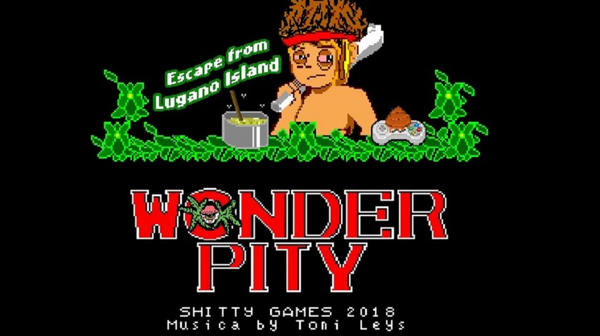
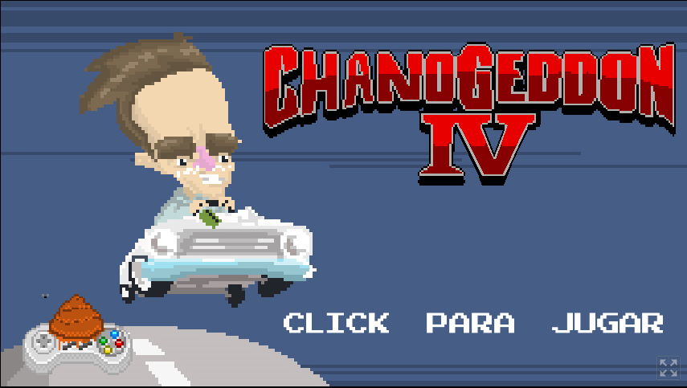

Minijuegos

Juego basado en conflicto de Gauchos De la Rural Y Veganos que protestaban por los derechos de los animales

Juego basado en el militante que utilizo un mortero casero en las manifestaciones contra la reforma previsional

Juego basado en el cantante "Pity" Alvares en su famosa bicicleta

❮
❯
Juego basado en el cantante Chano Moreno Charpentier quien protagonizó un accidente de tránsito.